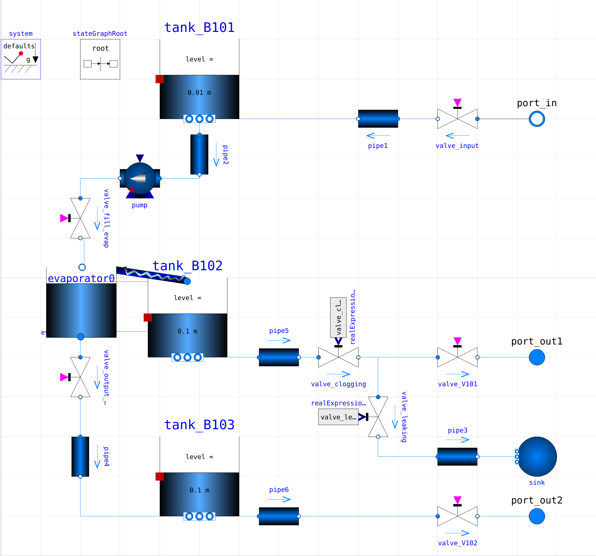

still_partial¶
The still module separates a mixture of fluids with a destillation process. The module can separate only one compound from the mixture.
Overview¶
There is one input and two outputs to the distill module. The input connects to a discrete valve, which is controlled by a state-graph. Depending on the state of the system the valve opens sequentially and fills the input tank.
The input tank is connected via a pump - discrete valve combination to an evaporator tank. The evaporator heats the fluid until it boils. Through a Liebig-Condenser the fluid is filled into an reservoir tank. The evaporator is reconstructed from a pump - stategraph combination. As soon as a certain amount of fluid from the evaporator is evaporated, a discrete bottom valve opens and purges the tank into a second reservoir tank.
A descending pipe - discrete valve combination connects the reservoir tanks to output ports.
{kind=link}
Distill module in diagram view
Functionality¶
The module separates a liquid compound and stores it in two output or reservoir tanks.
A state graph sequentially waits for the input tank to be filled, before closing the input valves. The purge valves of the input tank and the pump are subsequently activated and the fluids are pumped into the evaporator tank. The evaporator separates the fluid into two fluids, which are stored in two separate tanks.
The opening times and levels can be changed in the state graph, by changing the float values in the conditions.
1 // conditions
2 start_process.condition = true;
3 tankB101_isFull.condition = if tank_B101.level >= max_levelTank * tank_B101.height then true else false;
4 evap_isFull.condition = if evaporator0.evaporator_tank.level >= max_levelTank * evaporator0.evaporator_tank.height then true else false;
5 heating_isComplete.condition = if evaporator0.evaporator_tank.level >= max_levelTank * evaporator0.evaporator_tank.height then true else false;
6 evap_isEmpty.condition = if evaporator0.evaporator_tank.level <= min_levelTank * evaporator0.evaporator_tank.height then true else false;
7 tanks_areEmpty.condition = if tank_B102.level <= min_levelTank * tank_B102.height then true else false;
8 tanks_areEmpty2.condition = if tank_B103.level <= min_levelTank * tank_B103.height then true else false;
9 evaporating_isFinished.condition = if evaporator0.evaporator_tank.level <= evap_level * evaporator0.evaporator_tank.height then true else false;
10
11 // actions
12 valve_input.open = if time <= 2 or fill_tankB101.active then true else false;
13 valve_fill_evap.open = if time <= 2 or fill_evap.active then true else false;
14 pump.N_in = if time <= 2 or fill_evap.active then 400 else 0;
15 evaporator0.evaporating_water.N_in = if time <= 2 or step_evap.active then 200 else 0;
16 evaporating_true.open = if time <= 2 or step_evap.active then true else false;
17 valve_output_evap.open = if time <= 2 or empty_remainingEvap.active then true else false;
18 valve_V101.open = if empty_reservoirTanks.active then true else false;
19 valve_V102.open = if empty_reservoirTank2.active then true else false;
Faults¶
Between reservoir tank one and output port, a leakage, which purges parts of the volume flow into an outer system sink, and a clogging, which induces constriction of the pipe connection, can be induced.
The faults can be induced in the superModel.
Standard parametrization¶
Within the model pump-speed, tank volume, and pipe diameters can be manually adapted, by double-clicking the components. Switch times in the state-graph can be changed by double clicking on the transitions.